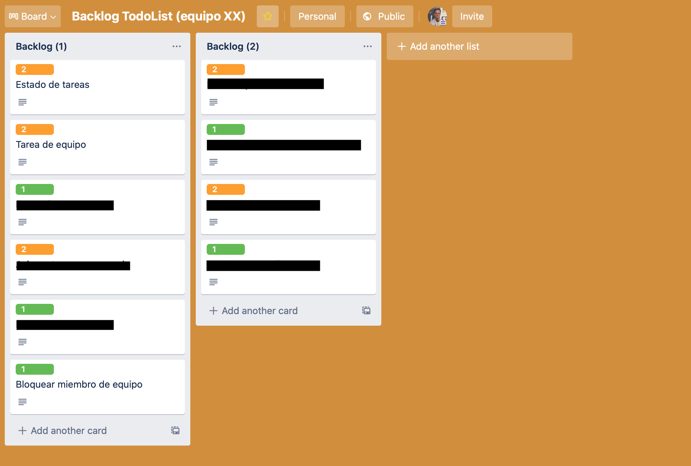

Práctica 3: Trabajo en equipo con GitFlow y diseño de nuevas funcionalidades¶
Objetivos y resumen de la práctica¶
En esta práctica se pretende conseguir:
- Crear los equipos de trabajo en GitHub.
- Adaptar el flujo de trabajo en Git y GitHub al trabajo en equipo.
- Implementar GitFlow.
- Desarrollar nuevas features con GitFlow.
- Lanzamiento de una versión nueva usando GitFlow.
- Preparar el backlog del producto con las nuevas historias de usuario a implementar en la siguiente iteración de la aplicación que se realizará en la práctica 4.
Formación de equipos¶
En esta práctica comenzamos a trabajar en equipos de 3 personas (de forma excepcional podrían ser 2 o 4 personas).
Cada equipo trabajará con un repositorio común seleccionado de uno de los miembros del equipo. Utilizaremos GitHub Classroom para crear el team y el repositorio.
Pasos a seguir¶
-
Debéis formar equipos de 3 personas. Enviad los componentes al foro de Moodle y os asignaré un nombre de equipo. Utilizad después el enlace de GitHub Classroom que enviaré al foro de Moodle para crear el equipo y apuntaros a él.
El primero que use el enlace debe crear el repositorio, escribiendo el nombre del equipo, como se muestra en la siguiente imagen.

El equipo trabajará con un repositorio creado por GitHub Classroom con el nombre
todolist-final-NOMBRE-EQUIPO. Al igual que en la práctica 1, el repositorio se creará en el grupomads-ua-20-21.
Una vez que la primera persona ha creado el equipo y el repositorio, las siguientes personas que usan el enlace pueden unirse al equipo creado o crear un nuevo equipo:

-
Una vez creado el repositorio debéis crear en él un tablero para gestionar las tarjetas con los issues y los pull requests. Creadlos con las mismas columnas que en las prácticas 1 y 2.
-
Escoged el proyecto que vais a usar como punto de partida de estas dos últimas prácticas de entre los proyectos de los miembros del equipo. Intentad que se un proyecto con código limpio y fácilmente ampliable.
Subidlo al nuevo repositorio, cambiando la URL del
origindel repositorio local y haciendo un push:1 2
$ git remote set-url origin https://github.com/mads-ua-20-21/todolist-final-NOMBRE-EQUIPO.git $ git push -u origin mainPor último, los otros miembros del equipo deberán clonar el repositorio para que los tres podáis trabajar con él en local.
-
Cambiad el nombre del proyecto (en el fichero
POM.xmly en elabout.htmlatodolist-final-equipo-XX.Haced un commit directamente en
maincon estos cambios. Comprobad que GitHub Actions sigue funcionando correctamente.
Nuevo flujo de trabajo para los issues¶
Debemos adaptar el flujo de trabajo en GitHub al trabajo en equipo. En cuanto a la gestión de los issues y tablero del proyecto cambiaremos lo siguiente:
- Selección del issue: Al pasar un issue de
To doaIn progressse debe asignar un responsable del desarrollo del issue. - Nueva rama con el issue: El responsable seleccionado será el que abra una rama nueva para el desarrollo del ticket y la subirá a GitHub.
- Desarrollo: Se trabaja en la rama. Cualquier compañero puede unirse al ticket y trabajar junto con el responsable, trabajando sobre la rama.
- Pull request: Cuando el ticket se ha terminado, el responsable
abre un pull request en GitHub y pone la tarjeta en la columna
In pull request. - Revisión de código: Los miembros del equipo revisan el código en el pull request (consultar documentación en GitHub: Reviewing proposed changes in a pull request). Al menos uno de los miembros del equipo deben dar el OK, añadiendo una reacción. Debéis configurar la opción de GitHub que obliga a que haya un mínimo de revisores en el pull request.
- Integración del pull request: Cuando un miembro da el OK, el responsable de la tarea integra el pull request.
Para implementar el trabajo en equipo será necesario trabajar sobre ramas remotas compartidas. A continuación explicamos con más detalle algunos aspectos comandos de Git necesarios.
Comandos Git¶
Veamos algunos comandos de Git relacionados con el trabajo compartido en repositorios y ramas remotas.
-
Subir una rama al repositorio remoto:
1 2
$ git checkout -b nueva-rama $ git push -u origin nueva-rama -
Descargar una rama del repositorio remoto:
1 2
$ git fetch $ git checkout nueva-ramaEl comando
git fetchse descarga todos los cambios pero no los mezcla con las ramas locales. Los deja en ramas remote tracking a las que les da el nombre del servidor y la rama (origin/nueva-rama).En el caso del comando anterior, el comando
git checkout nueva-ramaes equivalente agit checkout -b nueva-rama origin/nueva-rama. Se crea una rama localnueva-ramaconectada a la ramaorigin/nueva-rama. -
Actualizar una rama con cambios que otros compañeros han subido al repositorio remoto:
1$ git pullEl comando
git pulles equivalente a ungit fetchseguido de ungit merge. El comandogit fetchactualiza la rama remotaorigin/nueva-rama. El comandogit pulles equivalente a hacer:1 2 3
$ git checkout nueva-rama $ git fetch $ git merge origin/nueva-rama -
Subir cambios de la rama actual:
1 2
(estando en la rama que queremos subir) $ git pushEl comando
git pushfuncionará correctamente sin más parámetros si previamente hemos subido la rama con ungit push -u. -
Comprobar el estado de las ramas locales y remotas:
1$ git branch -vvEste comando no accede directamente al servidor, sino que muestra la información de la última vez que se accedió a él. Si queremos la información actualizada podemos hacer un
git fetch --allantes:1 2
$ git fetch --all $ git branch -vvEs importante recordar que
git fetch(a diferencia degit pull) no modifica los repositorios locales, sino que baja las ramas remotas cachés locales. -
Información de los repositorios remotos:
1$ git remote show originProporciona información del repositorio remoto, todas sus ramas, del local y de la conexión entre ambos.
1$ git remote -v updateProporciona información del estado de las ramas remotas y locales (si están actualizadas o hay cambios en algunas no bajadas o subidas).
-
Borrado de ramas remotas desde el terminal:
1 2
$ git push origin --delete nueva-rama $ git remote prune origin -
Si necesitamos en la rama de feature código que se haya añadido en la rama
main.Podemos hacer un merge de la rama
mainen la rama de feature para incorporar los avances de código que se han hecho enmainy que necesitamos en nuestra nueva rama:1 2
$ git checkout nueva-rama $ git merge main -
Solución de conflictos en un pull request:
Recordamos lo que hemos visto en teoría sobre la solución de conflictos detectados en un pull request.
Supongamos que hay un conflicto entre la nueva rama y
main. GitHub detectará el conflicto en la página de pull request. Para arreglar el conflicto:1 2 3 4 5 6 7
$ git checkout main $ git pull $ git checkout nueva-rama $ git merge main # arreglar el conflicto $ git push # ya se puede hacer el merge en GitHub
Pasos a seguir¶
-
Probad el nuevo flujo de trabajo en el tablero del proyecto creando un nuevo issue denominado
Actualizar la página Acerca de. En la descripción de issue comentad que se debe modificar la página para que muestren todos los miembros del equipo y el nuevo número de versión de la aplicación (1.3.0-SNAPSHOT). -
Escoged una persona del equipo como responsable del issue. El responsable del issue será el responsable de integrarlo en
mainy de solucionar los conflictos que puedan surgir. -
Probad los comandos Git anteriores en una rama en la que se resuelva el issue. Cada miembro del equipo deberá realizar un commit en el que se añada su nombre a la lista de autores de la aplicación.
-
Cread el pull request en GitHub, poniendo como responsable del PR al mismo responsable del issue.
-
Provocad un conflicto y arregladlo. Para ello se debe añadir un commit en
mainque entre en conflicto con los cambios realizados en la rama. Después se arreglará el conflicto y se subirá la solución al pull request. -
Por último, revisad el código, aceptadlo e integrad el PR en main.
Configuración de GitFlow¶
El flujo de trabajo Git que vamos a seguir es muy similar al flujo de trabajo GitFlow (recordad la clase de teoría
Ramas de largo recorrido¶
En GitFlow se publican las distintas versiones del proyecto en la rama
long-lived main y se hace el desarrollo en la rama
develop. A partir de ahora no desarrollaremos directamente en
main sino en develop.
En la página de configuración del repositorio en GitHub en Settings >
Branches > Default branch se puede configurar la rama por defecto
contra la que se realizarán los commits y la que aparecerá en la
página del proyecto. Tendréis que definir develop.
Ramas de feature¶
Desde el comienzo de trabajo con Git en las prácticas 1 y 2 estamos haciendo un desarrollo basado en ramas de corto recorrido, equivalentes a las ramas de features de GitFlow.
Tal y como se comenta en GitFLow estas ramas saldrán de develop y se
integrarán en develop. La diferencia es que en GitFlow estas ramas
se integran con la rama de desarrollo manualmente haciendo merge,
mientras que nosotros las integramos haciendo un pull request.
Pasos a seguir¶
-
Cread la rama
developy configurarla como rama principal del proyecto en GitHub. Todos los otros miembros deberán descargarla y moverse a ella en sus repositorios locales. Esta rama pasará a ser la de desarrollo principal. -
Cread tres issues distintos, simulando tres nuevas funcionalidades. Deben ser issues muy sencillos (cambiar el color de algún elemento de la aplicación, cambiar un texto, o algo similar). Cada uno de los miembros del equipo será el responsable de uno de los issues.
-
Configurad el repositorio GitHub para obligar a que cualquier pull request tenga que tener la revisión de una persona distinta del responsable del PR.
-
Desarrollad e integrar los issues en
developsiguiendo el flujo de trabajo planteado anteriormente. Debéis ir actualizando el tablero de GitHub se actualiza correctamente.
Ramas de release¶
Hasta ahora hemos hecho los releases en la rama main. A partir
de ahora seguiremos la estrategia de GitFlow y haremos ramas de
release que salen de develop y se integran en main y en
develop.
Haremos también la integración haciendo pull request.
Pasos a seguir¶
Vamos a probar el lanzamiento de una release usando el flujo de trabajo.
-
Cread un issue con la tarea Lanzar release 1.3.0.
-
Debéis publicar la nueva versión siguiendo los pasos de GitFlow:
- Cread la rama local
release-1.3.0a partir dedevelop. - Realizad en esta rama los cambios específicos de la versión. En
nuestro caso:
- Cambiar en la página
Acerca de"Versión 1.3.0-SNAPSHOT" a "Versión 1.3.0" y añadir la fecha de publicación. - Cambiar el fichero
pom.xml.
- Cambiar en la página
- Publicad la rama
release-1.3.0en GitHub y hacer un pull request sobremain. Una vez mezclado el PR añadir la etiqueta con la nueva versión1.3.0enmaincreando la página de release en GitHub. - Mezclar también la rama de release con
develop(se puede hacer también con un PR).
- Cread la rama local
-
Una vez hecho esto ya se puede borrar la rama
release-1.3.0y las ramasmainydevelopestarán actualizadas a la nueva versión. Hacer por último un commit endevelop(no hace falta PR) cambiando la versión a1.4.0-SNAPSHOT. -
Debemos comprobar que GitHub Actions pasa correctamente todos los tests de las nuevas características que se añaden.
Ramas de hot-fix¶
Las ramas de hotfix son ramas en las que se solucionan defectos
encontrados en la última versión publicada. Salen de main y se
mezclan de nuevo en main y en develop.
En nuestro caso l
Pasos a seguir¶
- Debéis realizar un hot fix, simulando la resolución de un
error, y actualizando el número de versión a
1.3.1. Haced la integración conmainydevelophaciendo también pull requests. La integración con develop producirá un conflicto en el número de versión. Mantened el número1.4.0-SNAPSHOTdedevelop.
Nuevas funcionalidades para la aplicación¶
Cambiamos totalmente de asunto. Tenemos ahora que dejar de pensar como desarrolladores y pensar como responsables del producto. Tenemos que pensar en las próximas funcionalidades a implementar en la aplicación. Las desarrollaremos en las 3 semanas que durará la práctica 4.
Deberéis reuniros y pensar en cómo hacer el producto más interesante para los usuarios. Pensad que queréis poner la aplicación en producción y que estáis buscando funcionalidades que la hagan interesante para que los usuarios se suscriban a ella.
Tenéis que poneros en el lugar de los usuarios y pensar en funcionalidades que les puedan ser útiles, resolver algún problema. No es cuestión de añadir funcionalidades porque sí, sino que tenéis que intentar hacer en 3 semanas un producto lo más coherente y útil posible.
Si os quedáis sin ideas, podéis mirar la aplicación todoist. Se trata de una aplicación completa de gestión de tareas pendientes similar a la que estamos desarrollando (aunque ellos tienen muchos más desarrolladores y presupuesto que nosotros 😀).
El resultado será un tablero Trello con columnas denominadas Backlog (1) y Backlog (2): en la que se encuentren las descripciones de las funcionalidades candidatas a implementarse en la siguiente práctica, ordenadas de más interesante a menos (de arriba a abajo y de izquierda a derecha) y etiquetadas con su tamaño. La imagen de abajo es un ejemplo, con los títulos de la mayoría de las funcionalidades borradas para no dar demasiadas ideas.

En la primera semana de la práctica 4 el profesor se reunirá con el equipo y podrá pediros alguna aclaración sobre las propuestas y la estimación de tamaño de las funcionalidades antes de validarlas.
Pasos a seguir¶
-
Haced una reunión, generar ideas en un brainstorming, organizarlas y estimar su dificultad. Sólo podréis definir funcionalidades de tamaño de uno y dos puntos. Si alguna funcionalidad es mayor, deberéis descomponerla en otras más pequeñas.
Los puntos indican un tamaño relativo. Si estimáis una historia de usuario en 2 puntos es porque pensáis que tardaréis el doble en terminarla que otra de 1 punto.
Para estimar la dificultad podéis usar planning pocker: se explica la funcionalidad y cada miembro del equipo elige un número: 1, 2, más de 2. Se enseñan simultáneamente y se explican las diferencias. Se siguen haciendo rondas hasta que hay un consenso.
-
Debéis seleccionar historias que sumen entre 12 y 15 puntos para implementar en la siguiente práctica 4. Para los equipos de 2 personas seleccionar entre 8 y 10 puntos. La práctica 4 tendrá una duración de 3 semanas.
Seleccionar las historias que penséis que hacen un producto atractivo, coherente y útil para el usuario. Ordenar las historias según su valor. Para estimar el valor podéis hacer algo similar al planning pocker pero usando los números 1, 2 y 3 como forma de identificar la utilidad o valor de cada historia.
-
Cread un tablero Trello compartido e invitad al profesor (
domingo.gallardo@ua.es). Cread las etiquetas1y2con distintos colores que indican el tamaño de cada funcionalidad. -
Añadir historias de usuario, ordenadas de mayor a menor importancia (arriba a la izquierda la más importante y abajo a la derecha la menos). Cada tarjeta de Trello debe contener:
- Título. Aparece en la tarjeta.
- Descripción. Muy breve, al estilo de las historias de XP. Podéis usar el estándar "Como XXX quiero XXX para XXX", o cualquier otro estilo. Pero siempre debe quedar claro que la característica debe ser una nueva funcionalidad que pueda usar o que note un usuario de la aplicación.
- Borrador de la interfaz de usuario. Puede ser un dibujo hecho a mano o un mockup hecho con alguna aplicación. No hace falta mucho detalle, sólo para que el cliente (el profesor) entienda la historia.
- Condiciones de satisfacción: condiciones que deben cumplirse para considerar que la historia está terminada. Son fundamentales a la hora de definir pruebas automáticas y manuales. Las pruebas se definen a partir de estas condiciones de satisfacción.
En la primera semana de la práctica 4 el profesor se reunirá con el equipo y podrá pediros alguna aclaración sobre las propuestas y la estimación de tamaño de las funcionalidades antes de validarlas.
Entrega y evaluación¶
- La práctica tiene una duración de 2 semanas y debe estar terminada el martes 1 de diciembre.
- La calificación de la práctica tiene un peso de un 7% en la nota final de la asignatura.
- Para realizar la entrega uno de los miembros del equipo debe subir a
Moodle un ZIP que contenga todo el proyecto, incluyendo el
directorio
.gitque contiene la historia Git. Para ello comprime tu directorio local del proyecto después de haber hecho unmvn cleanpara eliminar el directoriotargetque contiene los binarios compilados.
Para la evaluación se tendrá en cuenta:
- Desarrollo continuo (los commits deben realizarse a lo largo de las semanas y no dejar todo para la última).
- Correcto desarrollo de la metodología.
- Correcta especificación de las funcionalidades.